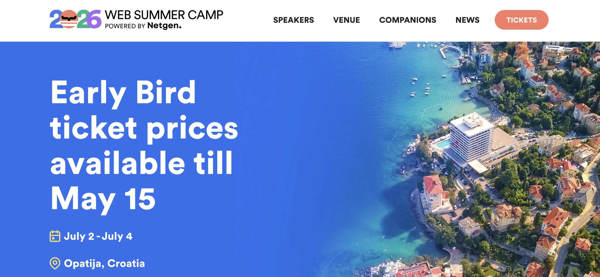
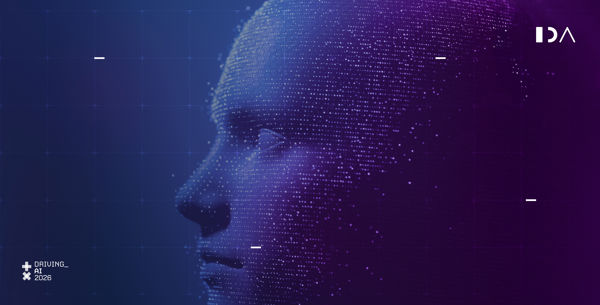
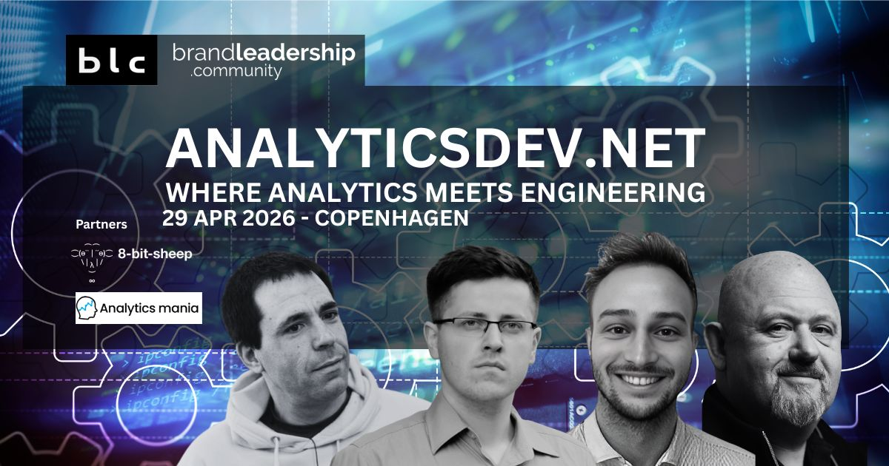
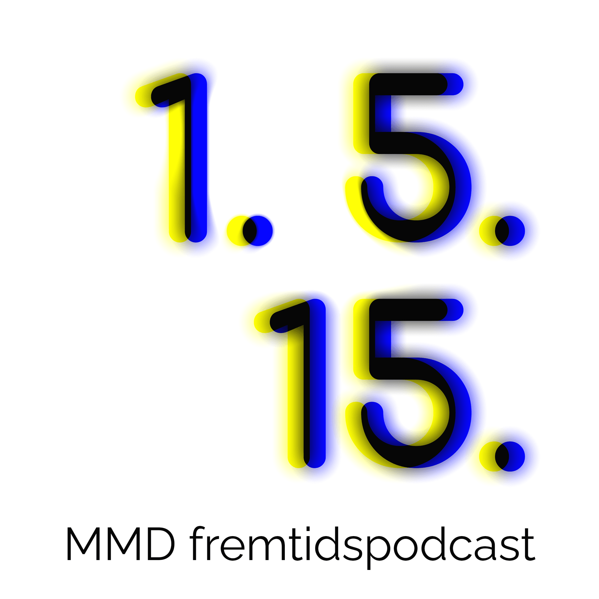
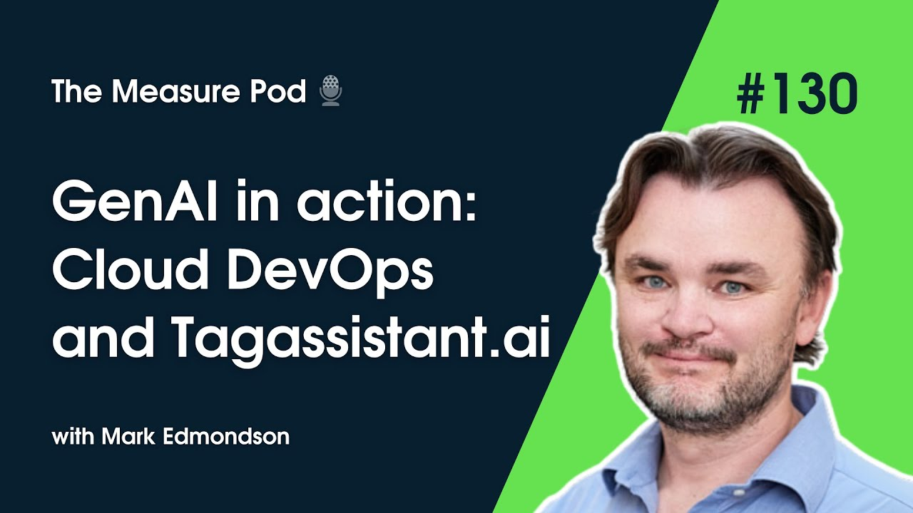

Presentations, podcast appearances, and conversations on AI engineering — AI-first languages, agent protocols, and building production-grade AI systems.

Three-hour hands-on workshop navigating the alphabet soup of AI protocols dedicated to responsive, dynamic user interfaces — the third way between a rigid form and a free-form chat box. Why data and UX are where AI applications will differentiate, now that we all share the same models.
Read the write-up
25-minute talk on AILANG — how determinism, explicit effects, neurosymbolic verification, and a self-correcting agent harness (motoko) reshape how AI writes code. Delivered on the “AI Tooling, Benchmarks & Evaluation” track.
Read the write-up48-min webinar on generating the medium instead of a file format: a design system written in English, a linter that keeps the agent honest, and one deck that serves the room, the reader and the PDF. Five of its twelve decks are borrowed from other talks.
25-min talk on AILANG: simple + explicit, neurosymbolic verification, the motoko self-correcting agent, live demos including Stapledon's Voyage.

The most valuable analytics data isn't in your website tags — it's in your AI chatbot logs. Mapping GA4 thinking onto agent telemetry, Langfuse, and the post-browser web.
Five-part exploration: AI coding revolution, entropy visualization, authority models, development loops, and what AI needs from humans
How AI-first approaches transform procurement and intelligence gathering with iterative improvement loops
Event-driven microservice architecture, MCP & A2A support, multi-cloud deployment, bridging prototype to production AI at scale
The most common question after a talk isn’t about the content, it’s “how did you make those slides?” The answer: each deck is a single self-contained HTML file — inline CSS and JS, no build step, no slide software. Live demos, animated diagrams and real data render natively, and the whole thing diffs cleanly in git.
It’s all open source, including the Claude Skill that writes new decks in the same design system and the linter that keeps them consistent. Clone it, swap the logo, and let your coding agent do the layout.

First episode of Klaus Mandal Hansen's podcast interviewing AI frontrunners. Discussing cloud-based generative AI engineering and the evolving landscape of AI development.
Listen Now
Discussing the intersection of AI and business operations — DevOps practices, data pipeline architecture, the development of TagAssistant.ai using MCP.
Listen Now